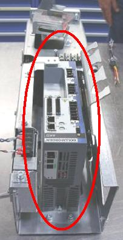
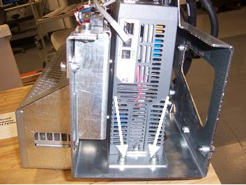
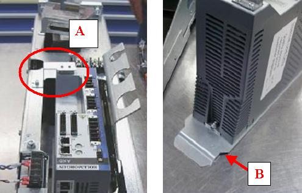
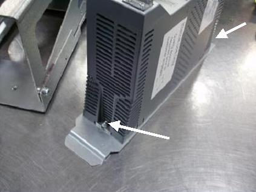
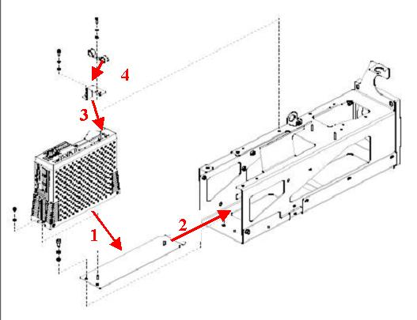
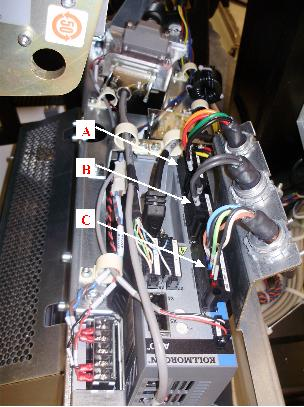
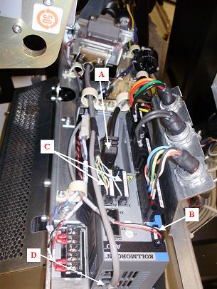

Operating Documentation
Direction 5193574-800, Rev# 22
LightSpeed 7.X Service Methods
Module Version 2.0, Version Date 6/12/15
Operating Documentation |
| Required Persons | Preliminary Reqs | Procedure | Finalization |
|---|---|---|---|
| 1 | 15 mins | 2 hours | 15-30 |
This procedure describes the steps necessary to install a new 2010 Axial Drive controller into the Titan axial drive assembly. Refer to Illustration 1 for a visual reference of the controller.
| Last Revised | June 12, 2015 |
Illustration 1: 2010 Axial Drive Controller

| Item | Qty | Effectivity | Part# | Manufacturer | |
|---|---|---|---|---|---|
| 5 mm and 7 mm hex wrenches and hex end sockets | 1 | - | - | - | |
| 5 mm hex driver or small adjustable wrench | 1 | - | - | - | |
| Item | Qty | Effectivity | Part# | Manufacturer | |
|---|---|---|---|---|---|
| 2010 Axial Drive Controller | 1 | - | 5344401 | - | |
| ||||
| Electrocution hazard | ||||
| voltages present in gantry | ||||
| use proper lockout/tagout procedures from the safety section of the service documentation when stated during procedure. this procedure includes work directly in the gantry power pan. |
| ||||
| Burn Hazard. | ||||
| The surface on THE BRAKE RESISTOR can become very hot. | ||||
| ALLOW TIME FOR SURFACE TO COOL BEFORE TOUCHING. |
| ||||
| blood-borne pathogens may be present. | ||||
| unprotected contact with blood-borne pathogens may cause disease transmission. | ||||
| use proper procedures and ppe to avoid blood-borne pathogens. |
| ||||
| Follow ALL required safety and PPE procedures when working on this product. | ||||
| Condition | Reference | Effectivity |
|---|---|---|
Only trained service personnel should service the GE CT Scanner. | - | - |
| ||||
| This procedure uses many screw, lock and flat washer combinations. Make sure the order of installation has the lock washer positioned between the flat washer and head of the screw. | ||||
Stop the rotor of X-ray tube in case of Liquid Bearing Tube before HVDC off. Refer to Liquid Bearing Tube Rotor stop procedure for details.
Remove gantry right side cover and disable axial drive, HVDC and 120VAC service switches from the service switch panel.
Refer to Replacements > Gantry > Enclosure > Cover Removal Procedures
Remove the gantry left side and top covers, scan window, and front cover. Connect the cover E-stop circuit to the terminators on the gantry.
Remove the right side tilting safety cover with a 5mm hex wrench for easier access to the drive module.
Disconnect all cables from existing controller and remove controller from axial drive assembly by removing the two screws attaching the bottom bracket to the axial drive with a 5mm hex wrench. Refer to Illustration 2.
Illustration 2: Removing Controller Assembly

Remove top L-shaped bracket from controller and axial drive assembly. Be sure to keep this bracket as it will be re-used for the installation of the new controller. Refer to Illustration 3.
Remove controller from bottom bracket using a 3mm hex wrench. Be sure to keep the bottom bracket as it will be re-used for the installation of the new controller. Refer to Illustration 3 and Illustration 4.
Illustration 3: Placement of Brackets on Controller

| Illustration 3 Key | |
| A | top, L-shaped bracket |
| B | Bottom Bracket |
Mount new controller to bottom bracket with two M4 nuts (with lock washer) and two M4 flat washers (refer to Illustration 4).
Illustration 4: Mounting of controller onto bottom bracket

Mount to bottom of drive assembly box with two M6 screws, lock washers and flat washers. Refer to Illustration 2and torque according to the table below.
Table 1: Torque Table for M6 screws
| 8 N-m | 70 lb-in | 5.8 lb-ft | 80.5 kg-cm |
Mount top (L-shaped) bracket onto controller with an M4 screw, lock washer and flat washer. Refer to Illustration 3 for placement of bracket.
Mount two plastic cable guides to the top of the second bracket with an M4 screw, lock washer and flat washer each.
Refer to Illustration 5 for visual reference of plastic cable guides.
Illustration 5: Plastic cable guides

Refer to Illustration 6 reference #4 for orientation of clips.
Illustration 6: Assembly Steps of 2010 Axial Drive Controller

Connect axial drive power cable from terminal strip into the X4 port of the controller. Refer to Illustration 7.
Connect resistor assembly cable to X3 port of the controller from underneath box. Refer to Illustration 7
Connect motor power cable from the 2010 Axial Drive motor to the X2 port of the controller. Refer to Illustration 7.
Illustration 7: Routing of axial drive power cable, brake resistor cable and motor power cable

| Illustration 7 Key | |
| A | Axial drive power cable into X4 port |
| B | Brake resistor cable into X3 port |
| C | Motor power cable into X2 port |
Connect feedback cable from motor to X10 port of the controller. Refer to Illustration 8.
Connect cable from KIM board to X1 port of the controller. Refer to Illustration 8.
Connect two boxed ends of KIM com. cable into X7 and X8 ports of the controller. Refer to Illustration 8.
| NOTE: | The pins are positioned so that ends will only go in one way. |
Connect third end of this cable into X12 port of the controller. Refer to Illustration 8.
Illustration 8: Routing of feedback cable, KIM to axial drive cable and KIM com cable

| Illustration 8 Key | |
| A | Motor feedback cable into X10 port |
| B | KIM to axial drive cable into X1 port |
| C | KIM to axial drive cable into X7 and X8 ports |
| D | KIM com cable into X12 port |
Turn ON the 120VAC. An "o2" code should display on the axial drive display screen. Refer to Illustration 9
Illustration 9: “o2” code on axial drive display

| Illustration 9 Key | |
| A | “o2” code should display in this window when 120VAC switch is ON |
Turn OFF the 120VAC
Replace the right side tilting safety cover.
Replace the front, top, and left side covers and the scan window.
Turn on the 120VAC, axial drive and HVDC service switches from the service switch panel.
Install the gantry right side.
Run the System Scanning Test from the Functional Checks procedure list.